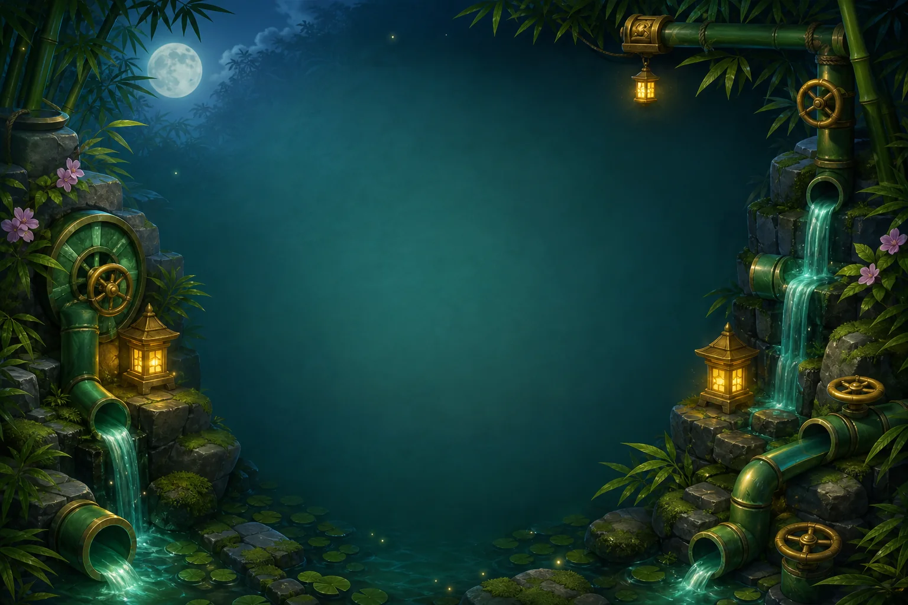

The first waterway looked almost solved. Water ran through the top half of the board, while the lower section sat quiet. It was tempting to keep rotating pipes until something changed. That would have been the wrong lesson.

I used Hint and it pointed to Bamboo pipe 16. One turn later, the next hint pointed to pipe 20. Two turns restored Waterway 1. The satisfying part was not the animation at the end; it was realizing the board had been giving me the answer through the first dry connection.
Trace the route, not the pieces
Panko's Bamboo Waterway asks you to rotate a network so water can travel from the carved spring to the flowering basin. A straight pipe is easy to understand in isolation. The decision gets interesting at the elbows: a turn can connect the next section while quietly breaking the section behind it.
That is why I would start at the destination and the spring, then inspect the first place where the water stops. Fixing a known break is much more useful than spinning a crowded junction and hoping the whole board improves.
Undo makes a bad idea useful
On a replay, I deliberately turned the source the wrong way. The route became harder to read, so I pressed Undo. The pipe returned to its previous state immediately, and the water came back. That tiny recovery loop matters: the game lets a wrong idea become information instead of punishment.
The full campaign grows this same thought across 30 authored waterways and six chapters. The challenge is not speed. It is learning to notice which connection actually controls the next decision.
If you like puzzles where patience beats frantic input, try Panko's Bamboo Waterway. Start with the first dry joint. Your hands will probably want to rotate everything; the board usually needs less.
This article was outlined with AI assistance and then checked and edited after a hands-on play session by the WeightStudio team.